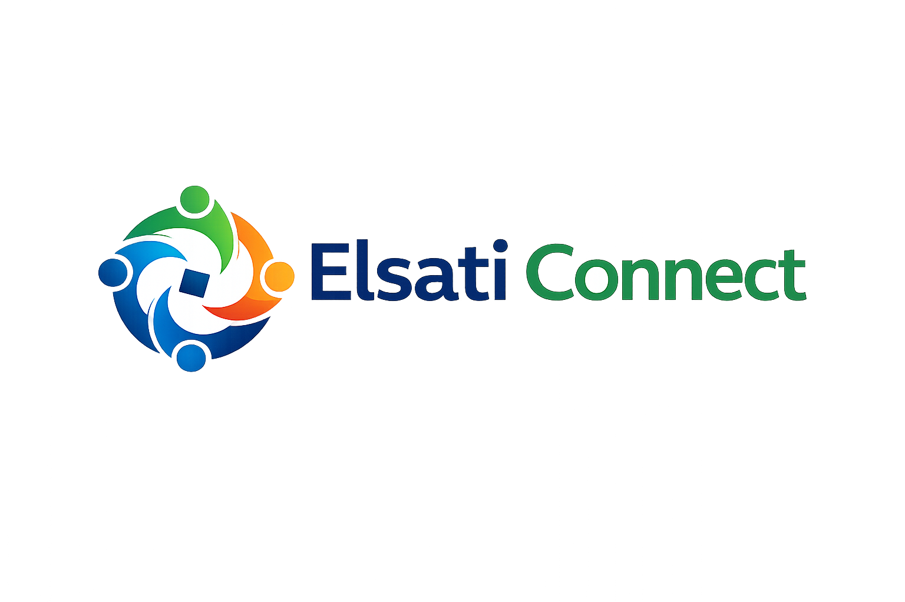

Post a procurement request
Businesses describe the products or services they need, including quantities, timelines, and delivery requirements.

How It Works
Businesses submit procurement requests, verified suppliers respond with quotations, and teams compare options through one structured workflow designed for speed, transparency, and better decision-making.
Workflow
Elsati Connect organizes procurement into clear steps so requests, quotations, supplier decisions, and fulfillment stay easy to follow.
Businesses describe the products or services they need, including quantities, timelines, and delivery requirements.
Approved suppliers receive relevant opportunities and submit quotations directly through the platform.
Teams review pricing, timelines, supplier profiles, and future AI-driven recommendations in one place.
Procurement teams choose suppliers confidently using transparent and structured comparisons.
Suppliers fulfill requests directly or access partnered logistics support when additional delivery capacity is needed.
Platform Users
Centralize procurement requests, compare supplier quotations faster, and maintain visibility across sourcing decisions.
Access procurement opportunities, respond to requests efficiently, and build supplier credibility over time.
What Changes
Platform Preview
Requests, quotations, supplier communication, and procurement decisions are organized in one centralized system.
Open procurement requests managed in one dashboard.
Responses received and ready for comparison.
Future AI-assisted supplier matching score.
Data Intelligence
Elsati Connect is evolving beyond procurement workflows into intelligent procurement support through analytics, supplier insights, and AI-assisted decision-making.
Track supplier responsiveness, reliability, and performance history.
Compare quotations faster using structured supplier and pricing data.
Generate reports and visibility across sourcing activity.
Future AI tools will help businesses identify optimal suppliers and procurement patterns.
Principles
Every sourcing decision remains visible and easy to review.
Simple processes reduce friction for vendors responding to requests.
Structured comparisons help teams move with confidence.
Move procurement out of inboxes and spreadsheets into one transparent sourcing workflow.